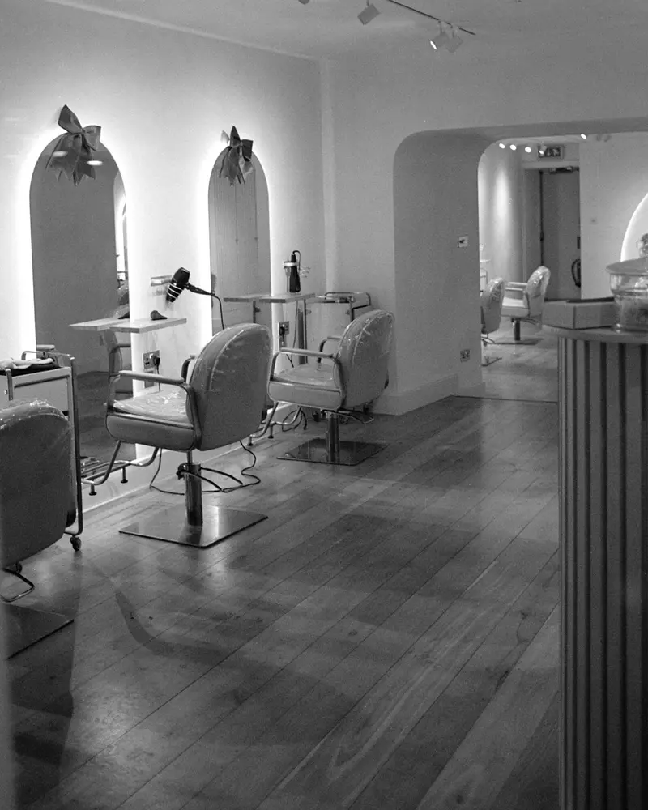
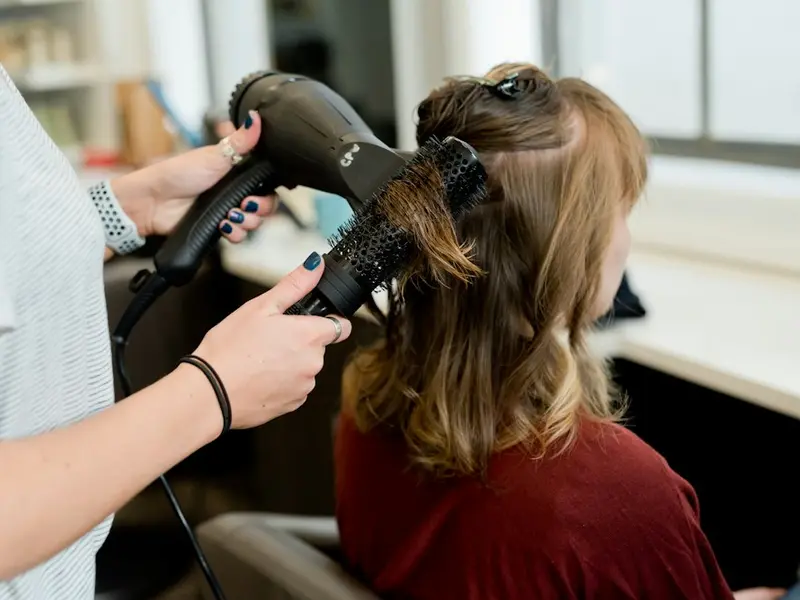
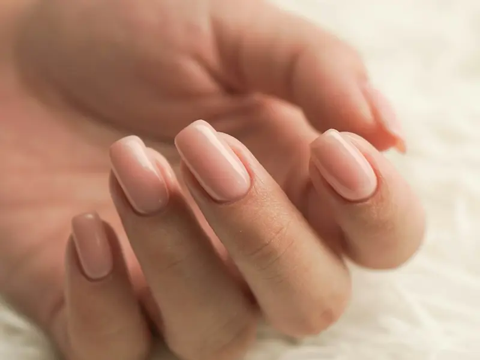

Frizer, manikir, pedikir i masaža na jednom mestu
Salon lepote u Miljakovcu. Radi se po dogovoru: pozovite i zakažite termin.
Pozovi i zakaži terminPoziv na 062 595792.
Radno vreme
- Utorak – petak
- 10:00 – 20:00
- Subota i nedelja
- 10:00 – 16:00
- Ponedeljak
- ne radimo
Stanka Paunovića Veljka 78j, Miljakovac, Beograd

Usluge i cene


Frizerske usluge
- Šišanje 2.000 – 2.500 – 3.000 din
- Feniranje 1.000 – 2.500 din
- Farbanje 3.000 – 4.000 – 5.000 din
- Uslužno farbanje 2.000 – 3.000 din
- Pramenovi 8.000 – 20.000 din
Manikir i pedikir
Manikir zakazujete kod Marine: 060 54 54 912
- Estetski manikir baza + lak 1.300 din
- Estetski manikir gel + lak 1.800 din
- Estetski manikir nadogradnja (opcija 1) 2.500 din
- Estetski manikir nadogradnja (opcija 2) 3.000 din
- Dodatak crtanje frenča 200 din
- Skidanje gela 700 din
- Pedikir 3.000 din
Tretmani lica i tela
- Higijenski tretman lica 5.000 din
- Dermapen tretman 6.000 – 8.000 din
- Hemijski piling 4.000 – 6.000 din
- Masaža celo telo (1h) 4.000 din
- Parcijalna masaža (30 min) 2.000 din
- Kavitacija po regiji 2.000 din
- Elektrostimulacija 2.000 din
Depilacija i epilacija
- Depilacija nogu 2.000 din
- Depilacija ruku 1.000 din
- Depilacija prepone 1.500 din
- Depilacija leđa 2.000 din
- Depilacija pazuha 1.000 din
- Laserska epilacija (po regiji) 2.000 – 5.000 din
Ostali tretmani
Cena se dogovara pozivom.
- Keratinski tretman kose
- Olaplex tretman kose
- Ruski volumen kose
- Trepavice
- Parafin
- Masaža lica
- Antistres masaža
- Anticelulit masaža
- Relax masaža
- Terapeutska masaža
- Vakum slim tretman
Ne znate koji tretman vam treba? Pozovite, pa ćemo dogovoriti termin.
Pozovi i zakaži terminPoziv na 062 595792.
Šta kažu klijenti
Fantastična usluga, vrlo pristupačne cene, za svaku preporuku! Vrlo detaljno rade sve.
Najbolji ... najbolji. Sve na jednom mestu: frizer, masaža, tretmani lica, trepavice, manikir, pedikir, el. stimulacija, depilacija... i još mnogo toga. Vrhunska usluga ... profesionalni, ljubazni.
Ljubazno osoblje, pristojne cene, nema gužve ali rade na zakazivanje. Na jednom mestu pedikir, manikir i frize.
Pitanja pre poziva
Koliko košta?
Cene su u cenovniku iznad, po usluzi. Za tretmane koji nisu na cenovniku cenu dobijate pozivom na 062 595792.
Mogu li da dođem bez zakazivanja?
Radi se po dogovoru, pa prvo pozovite i zakažite termin. Zovite utorkom do petkom od 10 do 20h, subotom i nedeljom od 10 do 16h.
Kako se zakazuje manikir?
Manikir zakazujete direktno kod Marine na 060 54 54 912. Sve ostalo zakazujete na 062 595792.
Gde se nalazite?
Stanka Paunovića Veljka 78j, Miljakovac, Beograd. Navigaciju do salona otvarate dugmetom na dnu stranice.
Imam još pitanje.
Pišite nam na Instagramu, u poruke (DM): @mamba.mb.
Gde smo i kada radimo
Stanka Paunovića Veljka 78j
Miljakovac, Beograd
- Utorak – petak
- 10:00 – 20:00
- Subota i nedelja
- 10:00 – 16:00
- Ponedeljak
- ne radimo
Poziv na 062 595792.
Otvori navigaciju do salona Pogledajte radove na InstagramuMAMBA MB, frizersko kozmetički studio